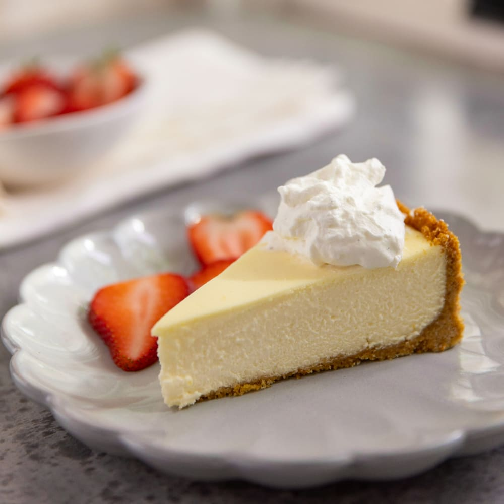

Classic Cheesecake

Description
Total 8 hours (includes cooling and chilling time). Active 30 mins. Makes One 9-inch cheesecake
Ingredients
- 1/2 cups graham cracker crumbs
- 1/3 cup sugar
- 6 tablespoons (3/4 stick) unsalted butter, melted
- Three 8-ounce blocks cream cheese, at room temperature
- 1/2 cup sugar
- 1/4 cup sour cream
- 2 tablespoons plus 1 teaspoon cornstarch
- 3 large eggs
- 1 tablespoon fresh lemon juice
- 1 teaspoon pure vanilla extract
- 1 1/4 cups heavy cream
Steps
- Preheat the oven to 350°F.
- To make the graham cracker crust: Double-wrap the bottom of a 9-inch springform pan with foil to keep water from seeping into the pan.
- In a large bowl, combine the graham cracker crumbs and sugar. Stir to blend. Stir in the melted butter until well blended. Press the crust into the bottom of the pan and halfway up the sides.
- Bake the crust until golden brown, 8 to 10 minutes. Remove from the oven, but leave the oven on.
- To make the filling: In a stand mixer fitted with the paddle attachment, combine the cream cheese, sugar, sour cream, and cornstarch. Mix on medium-high speed until light and fluffy. Slowly beat in the eggs, lemon juice, and vanilla. Mix until thoroughly incorporated. Turn the mixer off and scrape down the sides of the bowl well. Pour in the cream and mix on low speed until the mixture is smooth.
- Pour the filling into the baked crust.
- Place the cheesecake in a baking pan that is larger than the springform pan and carefully fill the pan about three-quarters full with hot water.
- Bake the cheesecake until the center only slightly jiggles, 1 hour to 1 hour 10 minutes.
- When the cheesecake comes out of the oven, remove it from the water bath and place on a wire rack. Carefully run a thin knife around the edge of the cheesecake to release it from the sides of the pan. Let the cheesecake cool to room temperature for at least 1 hour, then remove the sides of the springform pan.
- Refrigerate for at least 6 hours before serving. Cut into 8 to 10 slices.
- Store loosely covered with plastic wrap in the refrigerator for up to 2 days.